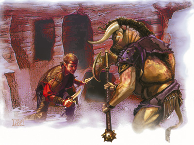

|
执法者 Ｊｕｓｔｉｃｉａｒ

哪里有法律，哪里有反抗它们的人，哪里人民生活在对这些法律破坏者着的恐惧中，就有勇敢的灵魂追捕那些法律破坏者。这就是执法者。他们做这一行不是为了钱，不是为了光荣，他们做这个因为这个吃力不讨好的工作需要人去做。这也经常成为一个希望在将犯罪消失在日光下的人的一个满意的职业。执法者一般依靠他们自己的机智与技能独来独往。
他们无畏的而且一心一意的追击他们的猎物，而且在战斗中他们是无情的。
无辜的表情和各种借口可以在法庭上为辩解服务，但悦耳的语言不会改变犯罪的事实或宽恕一个罪人。一个执法者不一定非是一个法官，陪审员，行刑者；他们经常仅仅是在自己有机会做这个工作的时候去做着这个工作。当用法律之手惩戒一个恶徒不切实际时，或者罪犯反抗时，执法者会将最终的审判毫不犹豫的给这些罪有应得的人。而且一些邪恶的执法者喜欢在交出他们的囚犯之前拷打他们以使他们忏悔。当面对艰巨的挑战时，执法者们有时会彼此合作或与其他的人物组队去猎捕被法律通缉的人。大多数执法者以巡林客开始。一些圣武士也发现成为一个执法者与他们的思想理念相符。战士从杀戮中得到足够的报酬，将人活者带回来明显要更费时费力。相反很多牧师太宽容了以至于不能成为执法者，牧师的一个明显的例外是圣・库斯伯特 。游荡者与诗人借助他们的盗贼技能，可以在这一行非常称职。甚至那些特殊的德鲁伊，术士，法师（尤其是预言系），用魔法代替钢铁作为他们的武器，也会加入这一行业。
生命骰数：d10
技能点数：4+智力调整值
表２－１７：执法者
等级 ＢＡＢ 强韧 反射 意志 特殊
１ ＋１ ＋０ ＋０ ＋２ 生擒活捉，非致命攻击＋１ｄ６
２ ＋２ ＋０ ＋０ ＋３ 精通擒抱，瘫痪攻击
３ ＋３ ＋１ ＋１ ＋３ 异种武器娴熟（手铐），通晓街道＋２
４ ＋４ ＋１ ＋１ ＋４ 非致命攻击＋２ｄ６
５ ＋５ ＋１ ＋１ ＋４ 五花大绑
６ ＋６ ＋２ ＋２ ＋５ 通晓街道＋４
７ ＋７ ＋２ ＋２ ＋５ 非致命攻击＋３ｄ６
８ ＋８ ＋２ ＋２ ＋６ 精通五花大绑
９ ＋９ ＋３ ＋３ ＋６ 通晓街道＋６
１０ ＋１０ ＋３ ＋３ ＋７ 直觉，非致命攻击＋４ｄ６
要求：要想成为执法者，人物必须符合下要求
阵营：任何守序阵营
基础攻击值：＋６
技能：搜集信息5级，搜寻5级，野外求生5级
专长：专攻技能（搜集信息），追踪
职业技能：唬骗（cha） 攀爬（str） 易容（cha） 搜集信息（cha） 医疗（wis） 躲藏（dex） 威吓（cha） 跳跃（str） 知识（int） 聆听（wis） 潜行（dex） 开锁（dex） 骑术（dex） 搜索（int） 察言观色（wis） 侦察（wis） 野外求生（wis） 游泳（str） 绳技（dex）
职业特性：
武器和装甲熟练：执法者得不到任何武器和装甲熟练熟练。
生擒活捉（bring'em back alive）（EX）：无轮任何时候，当执法者使用一件近战武器时，他可以以造成非致命伤害代替致命伤害，同时在攻击掷色上没有惩罚。而通常若想造成非致命伤害会在攻击掷色上有-4的惩罚。
非致命攻击（nonlethal strike）（EX）：一个执法者可以做出非致命的攻击，当他夹击对手或对手的敏捷修正没有加到其ac中去（无论他是否有敏捷修正）时，执法者的攻击将造成额外1d6的非致命伤害。
这个额外伤害在4级时上升为2d6；在7级升为3d6；10级时升为4d6。当执法者在非致命攻击时出现致命一击时，这个额外伤害不会被重击倍数相乘。
执法者只能非致命攻击有实体的活的生物--不死生物、构装生物、泥形怪物、植物、虚体生物都不会被非致命攻击。同样，免疫非致命伤害的生物也免疫此技能造成的非致命伤害。执法者不能对隐匿的生物使用此能力。
精通擒抱（improved grapple）（EX）：在第二级，即使执法者没有满足条件，也会获得此专长。
瘫痪攻击（crippling strike）（EX）：一个二级或更高等级的执法者可以以非致命伤害的形式削弱和牵制对手。当执法者造成非致命伤害时，同时给对手造成1点力量伤害。
异种武器娴熟（手铐）：由于对抓捕罪犯十分熟悉，执法者知道一副手铐除了用来禁锢犯人外还能做什么。3级或更高级的执法者可以单手挥舞一副金属手铐就像一个棍棒，同时没有任何使用临时武器（improvise weapon）处罚。一副精致品手铐可以像一个精制品轻链枷一样使用。
通晓街道（street savvy）（EX）：一个三级或更高级的执法者在追捕罪犯时的搜索信息检测有奖励。这个奖励最初是+2，之后每三级增长额外的+2
五花大绑（hog -tie）（EX） 当一个5级或更高等级的执法者在擒抱成功地压住对手之后，他可以尝试五花大绑对手（另外他作其他决定，见玩家手册156页）执法者使用此技能时一只手里必须有一条绳索，链子或手铐。执法者可以对比他至多大一级的生物使用此技能（比如一个半身人可以试图五花大绑 一个中等体型或更小的对手）。 他只能对人型的生物使用此能力（大部分的类人猿，人形怪物，人形异界生物和巨人）当对手既不做擒抱检定或脱逃检定时执法者可以以绳技检定代替正常的擒抱检定。如果执法者成功，则目标被五花大绑。如果对手成功，则五花大绑失败，擒抱继续。如果执法者成功的五花大绑 一个对手，那个人被视为被捆绑而且无助的状态。被捆绑者可以试图逃脱但要做一个逃脱检定对抗执法者的绳技 技能的检定（包括他的+10的奖励，见玩家手册86页） 或者力量检定来折断绳索（绳子的DC为23，锁链和手铐的DC为26，精制品手铐为28）。
精通五花大绑（improved hog-tie）（EX）：8级或更高级的执法者可以不用先压倒对手，直接做五花大绑动作。只要擒抱已经确立，执法者可用一个攻击行动来做一个五花大绑尝试。同样如果执法者有实时备战专长，他就不用事先手里有绳索或手铐。
直觉（intuition）（SU）：当追浦一个特殊人物时，如果这个罪犯在距执法者一里以内距离内，10级的执法者可以做野外求生检定来断定这个罪犯的位置（所对抗的DC为15+目标的生命骰数HD）。执法者可利用这个能力来判断任何曾与他在战斗中交过手的人物的位置。
DM应该是这个检定对执法者来说密密的进行，执法者不会知道检定失败是由于掷色失败 还是由于对手不在有效距离内。（一个执法者一天之内对一个目标只能做一次检定。
）
兼职纪录（Multi class note）：成为执法者的圣武士可以继续在圣武士职业上晋级。
执法者样板
sharsek
人类
巡林客6／执法者 10
挑战等级16
中等类人生物
HD：6D8+6+10D10+10
hp：98
先攻调整值：+2
速度：30英尺
AC19，接触12，措手不及17
基础攻击加值 +16
攻击+25 近战（+2 短剑1d8+6/17-20），或者+23近战（1d8+6，手铐）或者+19远程（1d8+7，+1复合长弓[+6力量加值]）
全力攻击：+25/ +20+15+10近战（1d6+8/17-20，+2短剑）；或+23/+18/+13/+8近战（1d6+8/17-20，+2短剑）和+22/+ 17近战（1d6+4/17-20，+1短剑）；或+19/+14/+9/+4远程（1d8+7，+1复合长弓[+6力量加值]）
SA：生擒活捉，瘫痪攻击，精通五花大绑，非致命攻击+4d6；
SQ：动物伙伴，宿敌：人类 +4，宿敌：地精类生物+2，通晓街道，理解野生动物
阵营：守序中立
豁免：坚韧+9 反射 +10 意志 +11
属性：力量22 敏捷14 体质13 智力9 感知14 魅力10
技能和专长：搜集信息 +15，威吓 +15，搜索+8，侦察+11，野外求生+21，使用绳索（绳技）+21；坚忍，异种武器娴熟（手铐），精通重击（短剑），精通擒抱，精通双武器，近程射击，强力攻击，精准射击，实时备战，技能专攻（搜集信息），追踪，双武器攻击，专攻武器（短剑）。
生擒活捉（EX）：sharsek可以用近战武器造成非致命伤害并且在攻击上没有任何惩罚。
瘫痪攻击（EX）：当sharsek造成非致命伤害，他可以造成1点临时的力量伤害。
精通五花大绑（EX）：当sharsek确定了对一个大型或更小的人形生物的擒抱，他可以利用一个攻击动作去尝试五花大绑，（擒抱检定或者使用绳索检定来对抗对手的擒抱或逃脱艺术），如果成功，则对手被邦且处于无助状态。
非致命攻击（EX）：sharsek可以做出非致命的攻击，当他夹击对手或对手的敏捷修正没有加到其ac中去（无论他是否有敏捷修正）时，他的攻击将造成额外4d6的非致命伤害。非致命攻击对象只能是有实体的活的生物--不死生物、构装生物、泥形怪物、植物、虚体生物都不会被非致命攻击。同样，免疫非致命伤害的生物也免疫此技能造成的非致命伤害。他不能对隐匿的生物使用此能力。
动物伙伴（EX）：sharsek有一只狼作为它的动物伙伴，它的数据可在《怪物手册》283页查到除此之外如果动物伙伴在据他5步以内的距离内，sharsak有即时动作命令动物伙伴以及法术共享的能力。
战斗方式（EX）：sharsek选定了双武器战斗，他可以不满足所需的敏捷条件得到双武器攻击专长。
宿敌：当sharsek对抗人类时他的愚弄、聆听、察言观色、侦察、野外求生检定得到+4加值，在伤害上也有同样加值；对抗地精类生物时这些加值与伤害值加值为+2。
精通战斗方式（EX）：sharsek没有达到对敏捷的要求就可以获得精通双武器攻击专长。
直觉（su）：当追捕一个特殊人物时，如果这个罪犯在据执法者一里以内距离内，sharsek可以通过野外求生检定来断定这个罪犯的位置（DC为15+目标的生命色骰数）。
通晓街道（EX）：sharsek在追捕罪犯时有+6的搜集信息技能加值。
理解野生动物（EX）：就像通过交涉检定能够改善他人的态度一样，sharsek能够通过此方式来改善动物的态度。例如当对象是智力分别为1或2的魔法兽时，他尝试影响它们的检定分别为1d20+6或1d20+2。
巡林客法术
已准备（2个，dc为12+法术等级）：
1级－动物信使，魔牙
物品：+2短剑，+1短剑，+1复合长弓（+6力量加值）。 |